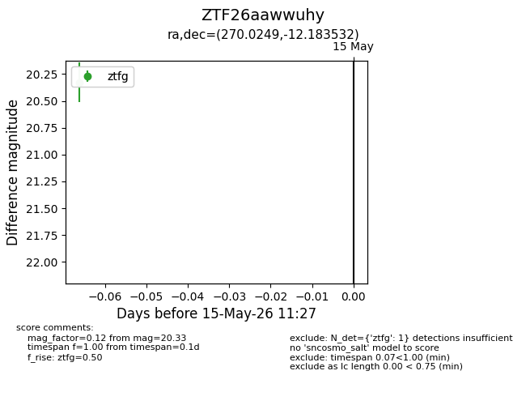
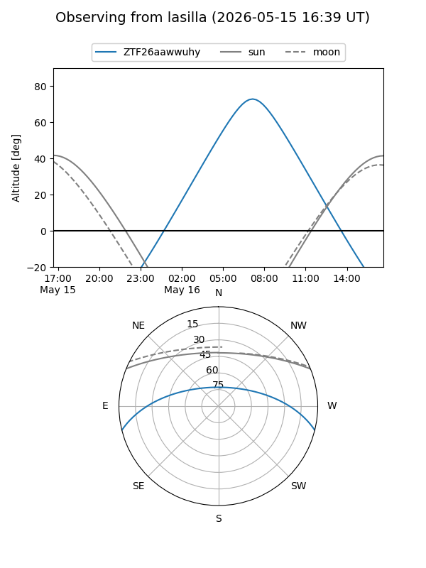
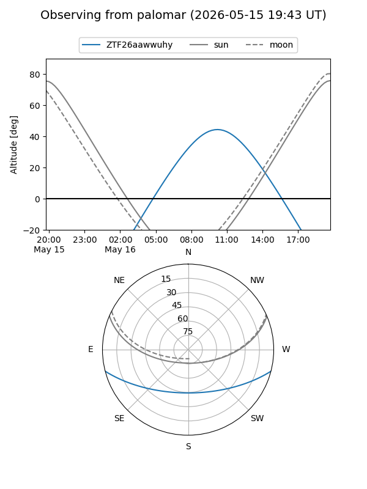

ZTF26aawwuhy
Target ZTF26aawwuhy at 2026-05-15 11:29
Aliases and brokers:
FINK: link
Lasair: link
ALeRCE: link
alt names
ZTF26aawwuhy (ztf,fink_ztf)
Coordinates:
equatorial (ra, dec) = 270.0249,-12.18353
equatorial (HMS+DMS) = 18:00:05.98,-12:11:00.71
galactic (l, b) = (16.1820,+5.56724)
Flags:
Photometry:
last ztfg=20.33
1 ztfg detections
Lightcurve

Visibility


Additional plots